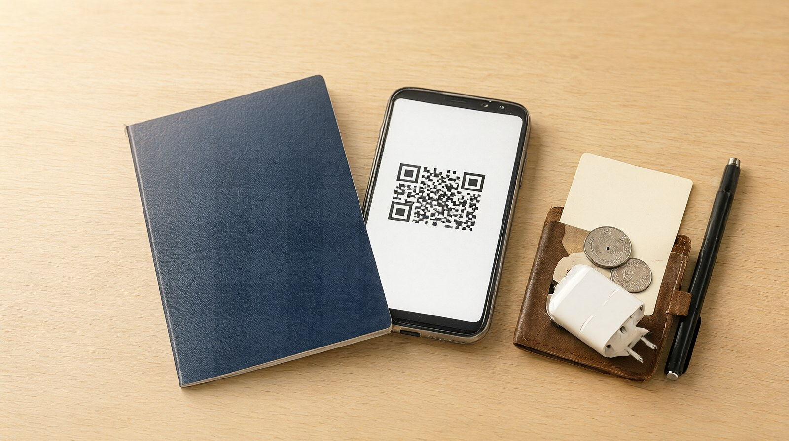

D-60부터 당일 공항까지 시점별로 확인하는 일본 출국 준비 목록
출국 전 체크리스트
핵심 요약
- 한국 여권 소지자는 관광 목적 단기 체류에 비자가 필요 없고, 체류 기간은 90일입니다(일본 외무성).
- 입국심사와 세관 신고는 Visit Japan Web에 미리 등록해 두면 2차원 코드 하나로 처리합니다(디지털청).
- 일본 전압은 100볼트에 콘센트는 A형입니다. 돼지코(변환 플러그)와 충전기 표기를 확인하세요(JNTO).
- 11월 1일 구매분부터 면세 방식이 바뀝니다. 쇼핑 계획이 있으면 면세 글을 먼저 읽으세요.
본문
D-60: 큰 틀 정하기
- [ ] 가족 전원의 여권을 꺼내 만료일을 확인한다. 일본은 입국에 필요한 여권의 잔여 유효기간을 별도로 정하지 않지만 충분히 남은 여권을 권장한다(주한 일본대사관). 항공사 기준은 항공사 안내로 확인하고, 안전하게 귀국일 이후까지 유효한지 본다.
- [ ] 체류 일수가 90일 이내인지 확인한다. 한국은 비자 면제 대상이고 허가 체류 기간은 90일이다(일본 외무성).
- [ ] 항공권과 숙소를 예약하고 취소 규정을 저장한다.
- [ ] 총액 예산을 정한다. 항공 포함 금액은 항공권 총액 비교 글을 참고한다.
- [ ] 여행자 보험 가입 여부를 정한다.
D-30: 준비물과 연결 수단
- [ ] 휴대폰 통신 방법을 정한다. JNTO는 짧게 가는 여행자에게 eSIM이나 포켓 와이파이가 편하다고 안내한다(JNTO). 내 휴대폰이 eSIM을 지원하는지, 통신사 잠금이 풀려 있는지 확인한다.
- [ ] 돼지코를 챙긴다. 일본 콘센트는 A형이고 전압은 100볼트다(JNTO). 충전기 표기의 입력 전압 범위에 100볼트가 들어 있는지 본다. 100볼트에 맞지 않는 기기는 변압기가 필요할 수 있다(JNTO).
- [ ] 환전 계획을 세운다. 쓰는 카드의 해외 결제와 수수료 조건을 확인한다. 일본 안에서 쓰는 예산 중 현금 비중은 가족과 정해 둔다.
- [ ] 현금과 유가증권을 합쳐 100만 엔을 넘기면 세관 신고가 필요하다. 일반 가족 여행에서는 드문 경우다(일본 관세청).
- [ ] 복용 약을 확인한다. 일본 세관은 의약품과 화장품에 반입 수량 제한이 있다고 안내한다(예: 의약품 2개월분, 화장품 24회분). 처방약은 처방전을 함께 챙기고, 수량 기준은 처방약과 독극물 1개월분, 그 밖의 의약품과 의약외품 2개월분 이내이며 넘으면 사전에 수입 확인 신청을 한다(후생노동성).
- [ ] 반입 금지와 제한 물품을 확인한다. 식물과 동물 관련 물품은 검역 대상이다(일본 관세청).
- [ ] Visit Japan Web 계정을 만든다. 이메일 주소가 필요하다(디지털청).
D-7: 입국 등록과 짐 싸기
- [ ] Visit Japan Web에서 이용자 정보(여권 정보)를 등록하고, 입국 예정을 등록한다(디지털청).
- [ ] 입국심사와 세관 신고 항목을 입력한다. 일본 내 체류지(숙소 이름, 주소, 연락처)를 입력하는 칸이 있으니 예약 내역을 옆에 두고 입력한다(디지털청 사용 설명서).
- [ ] 완료 후 입국심사와 세관 신고가 하나로 합쳐진 2차원 코드가 나오는지 확인한다. 2024년 1월부터 하나로 통합됐다(디지털청).
- [ ] 세관 신고는 전자 신고가 권장되고, 종이 신고서도 기내나 세관에 비치돼 있다(일본 관세청).
- [ ] 면세 반입 한도를 확인한다. 성인 1인 기준 술 3병(병당 약 760밀리리터), 궐련 200개비, 향수 2온스, 그 밖의 물품은 해외 시가 합계 20만 엔까지다(일본 관세청).
- [ ] 항공사의 수하물 규정(기내와 위탁, 액체류, 보조배터리)을 확인한다. 항공사 공식 안내를 따른다.
- [ ] 온라인 체크인과 좌석 지정을 한다.
- [ ] 면세 쇼핑 예정이 있으면 2026년 11월 면세 환급 절차 글을 읽는다.
D-3: 최종 점검
- [ ] Visit Japan Web 로그인을 한 번 더 해서 등록한 내용과 2차원 코드를 확인한다. 정보가 바뀌었으면 수정한다(디지털청 사용 설명서). 오프라인 이용이 가능하다고 안내되지만, 현장에서 로그인이 막히지 않게 미리 접속해 둔다.
- [ ] eSIM은 설치 시점(출발 전 또는 도착 후)을 판매처 안내로 확인하고, 설치용 코드를 저장해 둔다.
- [ ] 환전한 엔화를 받고, 카드 해외 결제가 막혀 있지 않은지 확인한다.
- [ ] 숙소 이름과 주소를 일본어로 저장한다. 교통 IC 카드는 어디서 어떻게 준비할지 정한다.
- [ ] 충전기와 돼지코를 기내 가방에 넣는다. 휴대폰과 보조배터리를 충전한다.
- [ ] 일본 날씨를 보고 옷을 조정한다.
당일 공항
- [ ] 여권, 항공권(휴대폰 화면 포함), Visit Japan Web 2차원 코드, 숙소 정보가 가방 맨 위에 있는지 본다.
- [ ] 가족 수만큼 여권이 있는지 센다.
- [ ] 현금, 카드, 돼지코, 충전기, 먹는 약을 기내 가방에 둔다.
- [ ] 일본 도착 후 순서를 기억한다. 입국심사 후 수하물을 찾고 세관을 지난다. 2차원 코드는 입국심사 창구와 세관 단말기 또는 검사대에서 보여 준다(디지털청).
- [ ] 하네다, 후쿠오카, 나하 공항은 수하물이 나오기를 기다리는 동안 전자 신고 단말기로 세관 신고를 할 수 있다(디지털청).
- [ ] 세관에서는 녹색과 빨간색 통로 중 하나를 고른다. 세금이나 금지, 제한 대상 물품이 없으면 녹색이다(일본 관세청).
- [ ] 귀국 당일에 면세품이 있으면 수하물을 맡기기 전에 면세 절차 단말기에서 세관 확인부터 한다. 자세한 순서는 면세 글에서 확인한다(일본 관세청).
확인 방법과 출처
- 무비자와 체류 기간: 일본 외무성 단기 체류 사증 면제 안내. https://www.mofa.go.jp/j_info/visit/visa/short/novisa.html
- Visit Japan Web 이용 방법: 디지털청 안내와 사용 설명서. https://services.digital.go.jp/en/visit-japan-web/guide/ , https://www.vjw.digital.go.jp/manual/main/visitjapanweb_manual_en.html
- 세관 신고, 면세 한도, 현금 신고, 반입 제한: 일본 관세청. https://www.customs.go.jp/english/summary/passenger.htm
- 돼지코와 전압: JNTO. https://www.japan.travel/en/plan/plug-and-electricity
- 통신(eSIM, 포켓 와이파이): JNTO. https://www.japan.travel/en/plan/wifi-and-connectivity , https://www.japan.travel/en/faq/
- 면세 환급: 일본 관세청. https://www.customs.go.jp/kaigairyoko/taxrefund_e.html
- 공식 확인 필요로 남긴 항목: 항공사별 여권 잔여 유효기간 기준, 교통 IC 카드 준비 방법. 이 글은 개인 블로그를 근거로 쓰지 않았습니다.
같이 보면 좋은 글
- 2026년 11월 일본 면세 환급 절차 (tax-free-2026-11)
- 데이터가 안 될 때 대처법 (no-data-esim)
- 항공권 총액 비교 (flight-total-cost)